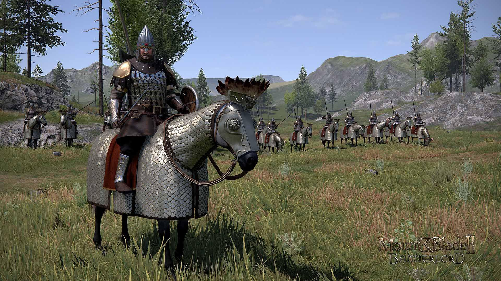
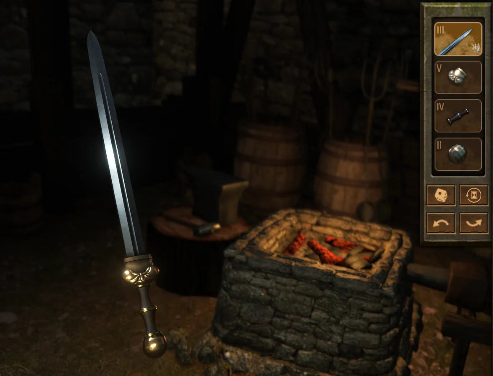
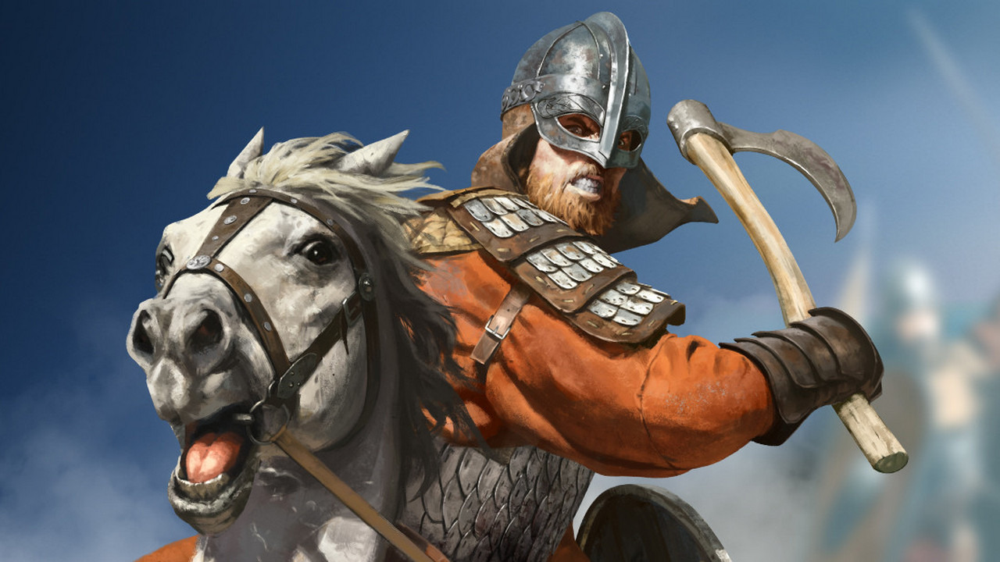
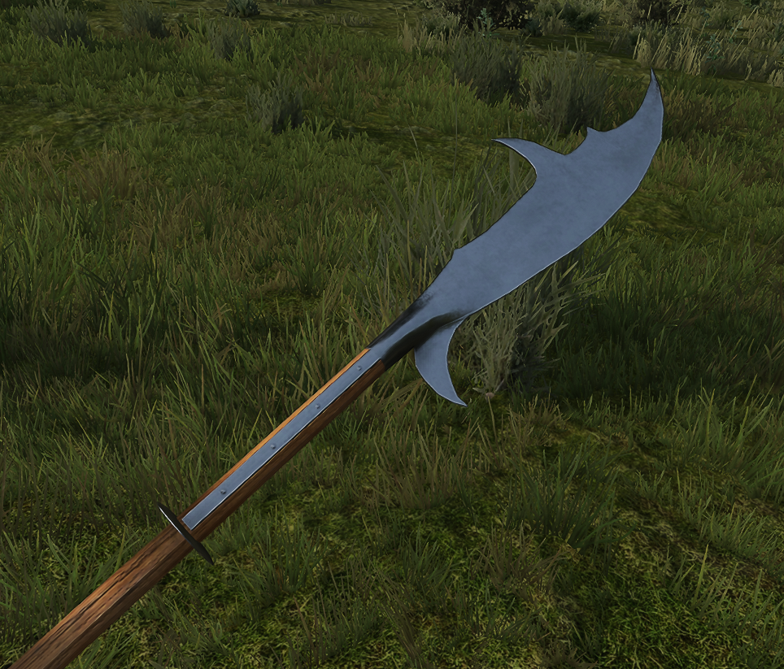

⬅ Повернутися на головну | Офіційний сайт Bannerlord
Bannerlord — це унікальне поєднання рольової гри (RPG) та стратегії. Ви починаєте як звичайний мандрівник, але можете стати королем власної імперії.
Ви можете займатися торгівлею, брати участь у турнірах або вести масштабні битви.

(Натисніть на картинку, щоб відкрити повнорозмірний варіант)
| Зброя 1 | Зброя 2 | Зброя 3 |
|---|---|---|
 |
 |
 |
| Швидкі удари та можливість носити щит. | Величезна шкода, пробиває броню. | Ідеально для зупинки кавалерії. |
| Тип юніта | Роль у бою | |
|---|---|---|
| Переваги | Недоліки | |
| Лучники та Кавалерія | Шкода на відстані | Слабкі у ближньому бою |
| Мобільність та натиск | Вразливі до списоносців | |